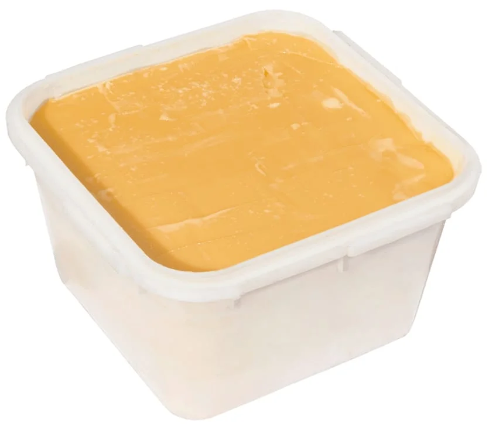
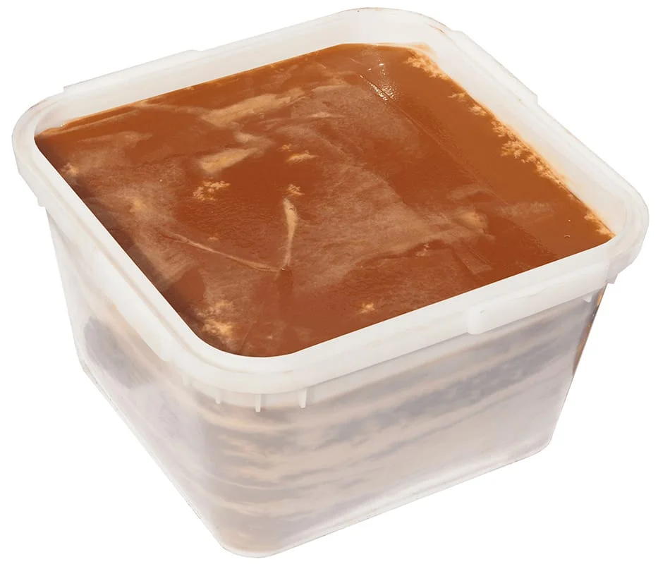

Основные свойства
Положительные эффекты продукта обусловлены богатым содержанием полезных веществ: витаминов, незаменимых
аминокислот, микро- и макроэлементов. Мёд обладает болеутоляющими, противовоспалительными свойствами.
Помогает
бороться с бессонницей и стрессами.
Показания к использованию
Мёд применяют при авитаминозе, для восполнения в организме за короткий срок необходимых минералов, для
улучшения работы сердца, почек, печени, при плохом зрении.
★★★★☆
230 руб/кг
Липовый

Основные свойства
Мед из липового цвета имеет желтоватый, не слишком выраженный оттенок, густую консистенцию, его вкус нельзя
спутать с другим продуктом. Основное его отличие и преимущество заключается в лечебных свойствах. Это
связано
с тем, что продукт содержит в своем составе множество компонентов, очень полезных для организма человека.
Показания к использованию
Рекомендуется ежедневное использование, желательно утром. Обычно перед завтраком рекомендуется одна чайная
ложка чистого меда, или ее можно растворить в теплой воде, молоке, чае, яблочном уксусе. Мед является
отличным
естественным заменителем сахара, поэтому его также можно использовать при приготовлении напитков и полезных
лакомств.
★★★★★
950 руб/кг
685 руб/кг
Гречишный

Основные свойства
Темный, ароматный и богатый антиоксидантами, железом, витаминами (B, C) и минералами продукт, который
укрепляет
иммунитет, улучшает кроветворение (полезен при анемии), благотворно влияет на сердце, сосуды, ЖКТ, нервную
систему, ускоряет заживление ран и ожогов, а также обладает противовоспалительными свойствами. Он помогает
бороться с простудами, стрессом, улучшает пищеварение и используется в косметологии, но при этом остается
аллергеном, поэтому употреблять его нужно умеренно.
Показания к использованию
Мёд помогает в работе бронхолёгочной системы и сердечной мышцы, участвует в кроветворении, восполняет
уровень
витаминов и необходимых веществ в организме. Его используют как природное снотворное.